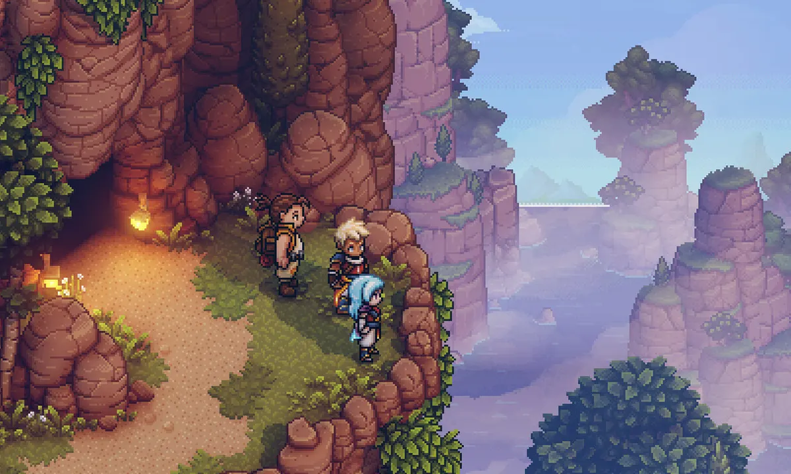

Replaced
Replaced is an upcoming game that immediately caught my eye for it's stunning visuals. The game uses a 2.5D system where it looks like 2D but the player can move around a Z pane in addition to the typical X and Y pane. If you have the time I'd highly recommend checking it out.
Sea of Stars
Sea of Stars is a more traditional RPG that focuses on turn based combat. The most unique aspect of it though is it's day night cycle that happens in real time and has effects on the gameplay. That cycle accompined by an amazing story and wonderful characters makes Sea of Stars a top example of how pixel art can enhance a games feel.
Omori
Omori is one of my favorite games and has one of the most touching and though provoking naratives of any game I've played. While the pixel art may seem a bit basic in comparison to the other games listed, don't knock it just for that. The art style really grows on you and becomes part of the games identity which is incredibly unique on its own.